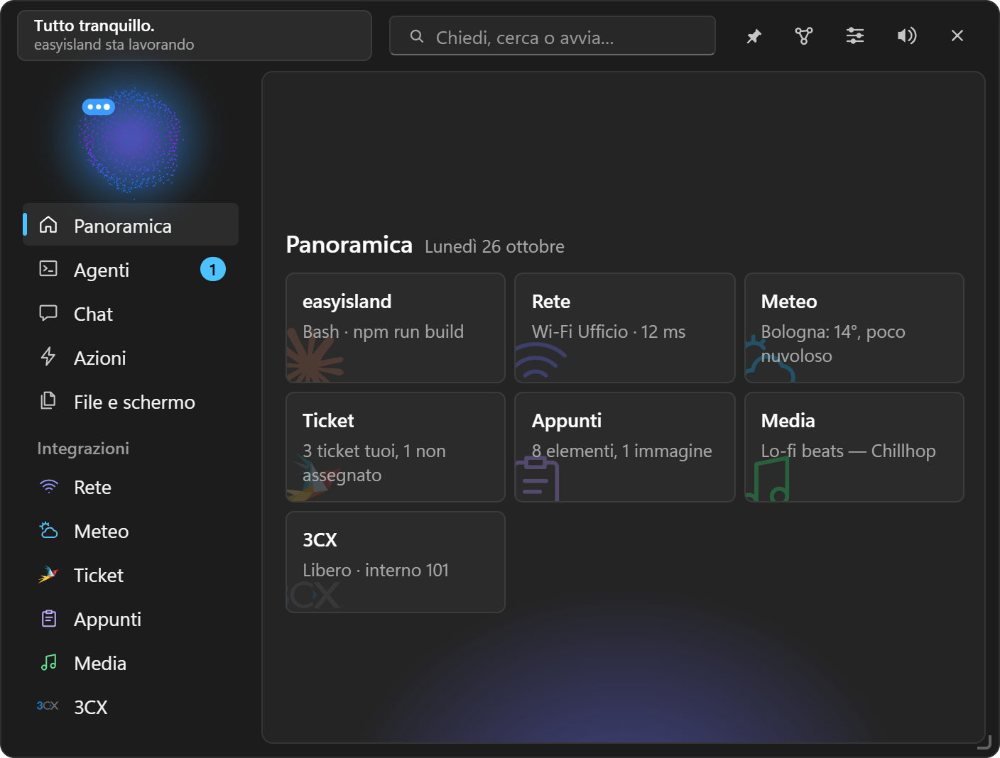

Guida di EasyIsland
Tutto quello che EasyIsland sa fare, pagina per pagina: dall'installazione all'agente personale che lavora da solo.
EasyIsland è un'isola sempre a portata di mano in cima allo schermo di Windows, con un piccolo personaggio animato. Da lì tieni d'occhio gli agenti di programmazione (Claude Code, Codex, opencode, Antigravity, Gemini CLI), approvi i loro permessi con un clic, chatti con il motore AI che preferisci, telefoni con 3CX, lanci le tue azioni rapide e segui i tuoi servizi. Dalla versione 1.0.0 è anche un agente personale: porta avanti dei compiti da solo, ricorda quello che conta e lo organizza in un secondo cervello che puoi esplorare.

#A chi serve
- A chi programma con un agente AI e non vuole tenere d'occhio il terminale: permessi, domande, modifiche ai file e fine del lavoro arrivano all'isola.
- A chi lavora con i clienti (tecnici, consulenti, piccoli uffici): ticket, centralino 3CX, Outlook, Teams, accesso remoto, Remote Desktop Manager e Notion in un posto solo.
- A chi vuole un assistente AI sul proprio PC che usi davvero i suoi strumenti, con il controllo su ogni azione.
#Cosa trovi nella guida
| Parte | Pagine |
|---|---|
| Per iniziare | Installazione, Primi passi, L'isola |
| Personalizzare | Posizione e aspetto, Profili e notifiche |
| Agenti di programmazione | Agenti di codice |
| Intelligenza artificiale | La chat, Motori AI, Modalità terminale e strumenti, Memoria e secondo cervello, Compiti, Battito e Abilità |
| Fare le cose | Azioni rapide e scorciatoie, Automazioni, File e schermo |
| Collegare i servizi | Integrazioni, 3CX, Notion, Microsoft: Outlook, Teams, To Do, Telegram, Assistenza remota, Integrazioni personali, Widget |
| Riferimento | Impostazioni, pagina per pagina, Privacy e sicurezza, Riga di comando e script, Problemi e soluzioni, Per sviluppatori |
#Requisiti
- Windows 10 o 11 a 64 bit. WebView2, che disegna l'interfaccia, è già incluso in Windows.
- Per la chat con l'abbonamento Claude: Claude Code da riga di comando con il login fatto (vedi Motori AI).
- Tutto il resto è facoltativo: ogni integrazione chiede solo quello che le serve.
#Principi
EasyIsland è costruita su poche regole che valgono ovunque:
- Niente si fa senza di te. Permessi, email, eliminazioni, installazioni: sempre un clic tuo. L'unica eccezione è la modalità «Automatica» che accendi tu, e anche lì le cancellazioni chiedono.
- Nessuna telemetria. Le richieste di rete vanno solo ai servizi che configuri tu, più il controllo degli aggiornamenti su GitHub, che si può spegnere.
- Segreti al sicuro. Chiavi, token e password stanno in Gestione credenziali di Windows, mai su disco o nell'interfaccia.
- Non blocca mai gli agenti. Se EasyIsland non risponde, gli agenti continuano nel terminale come se non ci fosse.
- Leggera. Con l'isola ritirata non disegna nulla: CPU vicina allo zero.
Nota: EasyIsland è open source con licenza MIT. Il codice è su GitHub.